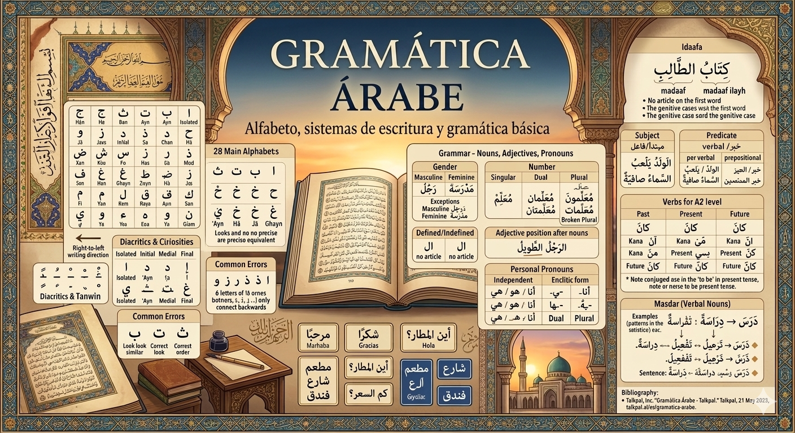
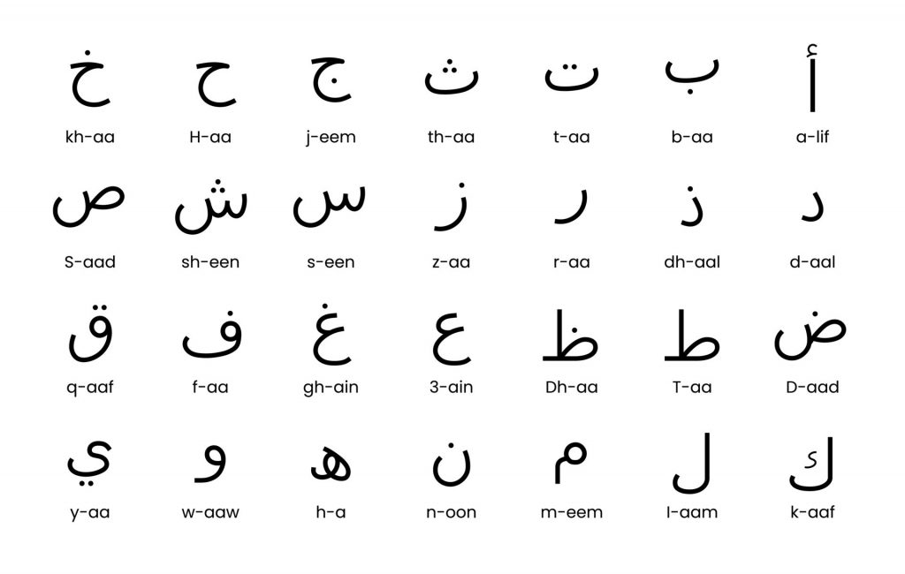
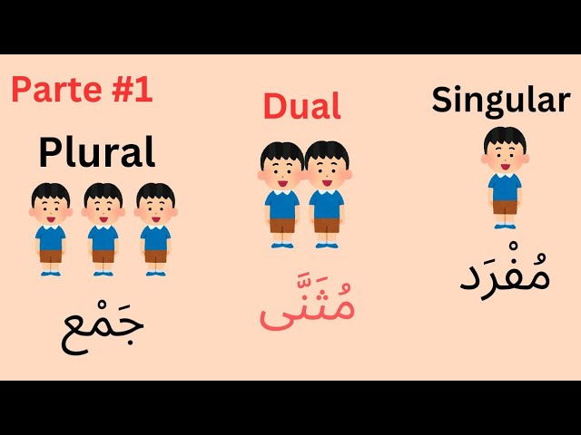
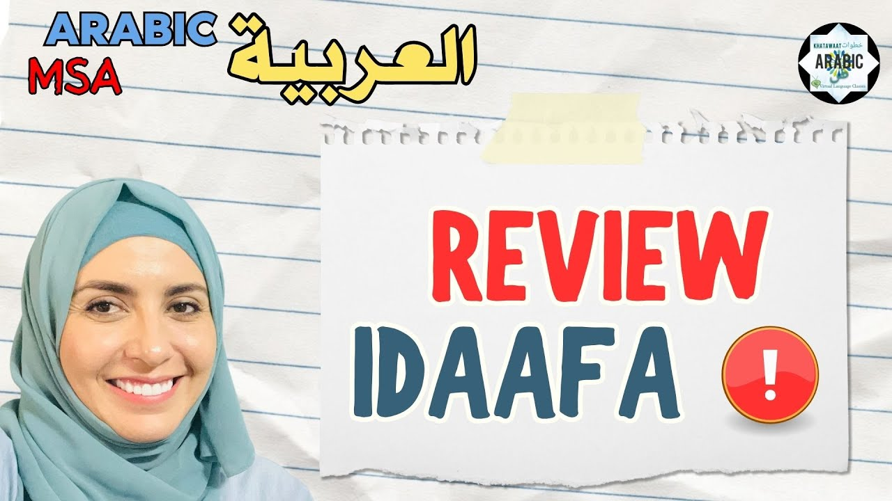
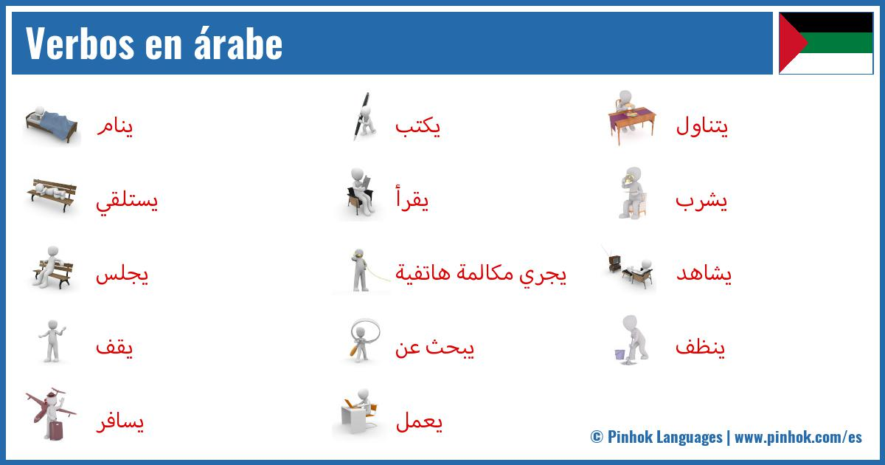

Alfabeto, sistemas de escritura y gramática básica
Alba Romo Gutiérrez
7 de marzo de 2026

El alfabeto se redacta de derecha a izquierda y esto se refiere a cómo se forman letras, palabras y números (aunque a veces los números se presentan en formato occidental). Son 28 letras que son consonantes y las vocales breves son marcas diacríticas y no se consideran letras. Las letras pueden tener variaciones en su forma dependiendo de su ubicación en la palabra: al inicio, en el medio, al final o solas. No hay letras en mayúscula o minúscula. Algunas letras como ع (‘Ayn), ح (Ḥā), خ (Jā), غ (Ghayn) no tienen una traducción precisa al español. Son esenciales para distinguir palabras que tienen diferentes significados. Ciertas letras no se conectan con la siguiente Seis letras (ا, د, ذ, ر, ز, و) solo se unen a la letra anterior, sin conectarse a la siguiente. La ligadura más conocida es Lām-Alif (لا). El alfabeto árabe se emplea extensamente en el arte, la arquitectura y los manuscritos. La caligrafía árabe posee estilos como Naskh, Thuluth y Kufic. También se utiliza en persa, urdu, malayo y otros idiomas relacionados con el islam.
| Letra | Nombre | Letra | Nombre |
|---|---|---|---|
| ا | Alif | ط | Ṭā |
| ب | Bā | ظ | Ẓā |
| ت | Tā | ع | ‘Ayn |
| ث | Thā | غ | Ghayn |
| ج | Jīm | ف | Fā |
| ح | Ḥā | ق | Qāf |
| خ | Jā | ك | Kāf |
| د | Dāl | ل | Lām |
| ذ | Dhāl | م | Mīm |
| ر | Rā | ن | Nūn |
| ز | Zāy | ه | Hā |
| س | Sīn | و | Wāw |
| ش | Shīn | ي | Yā |
| ص | Ṣād | ض | Ḍād |
A pesar de que el alfabeto árabe no tiene vocales en sus letras fundamentales, emplea marcas diacríticas para indicar las vocales breves.
Frases cortas útiles:
مرحبا (Marḥabā) → Hola
شكرا (Shukran) → Gracias
أين المطار؟ (Ayna al-maṭār?) → ¿Dónde está el aeropuerto?
كم السعر؟ (Kam as-siʿr?) → ¿Cuánto cuesta?
Lectura de carteles y menús:
Restaurante: مطعم
Calle: شارع
Hotel: فندق

La noción de sustantivos dentro de la gramática árabe es un aspecto esencial que sostiene la estructura de las oraciones en este idioma. En árabe, los sustantivos se dividen en tres grupos principales: masculino, femenino y plural. Se le asigna un género y un número a cada sustantivo, lo que influye en la concordancia de otros elementos en la frase.
Los sustantivos masculinos frecuentemente finalizan en una vocal larga o en una consonante, mientras que los sustantivos femeninos generalmente concluyen con las letras “t” o “a”. La forma plural en los sustantivos árabes se expresa agregando ciertas terminaciones o alterando el patrón de las vocales en el sustantivo. Otro punto relevante en la teoría de los sustantivos es la idea de “definido” e “indefinido”. En árabe, los sustantivos pueden ser definidos (cuando se refieren a algo específico o conocido) o indefinidos (cuando se refieren a algo más general o desconocido). Los sustantivos definidos se distinguen por la inclusión de artículos definidos como “al” o “al-” antes del sustantivo.
Aunque también hay aspectos muy interesantes como los plurales rotos o sustantivos contables e incontables. En este apartado se hablarán de tres aspectos clave para los sustantivos
Los adjetivos coinciden con el género, la cantidad y el caso del nombre que alteran, lo que convierte al árabe en un idioma singular y diverso en su forma de expresarse. Los pronombres se emplean para sustituir los nombres y aludir a ellos de un modo más breve.
Una de las normas fundamentales de la gramática árabe es que los adjetivos generalmente se sitúan después del sustantivo.
En árabe, el adjetivo se posiciona justo después del sustantivo que describe, creando lo que se denomina una frase nominal o إضافة وصفية. Un ejemplo de esto sería: الرجلُ الطَويلُ (ar-rajulu aṭ-ṭawīlu) – El hombre alto المرأةُ الجميلةُ (al-mar’atu al-jamīlah) – La mujer hermosa En estas situaciones, el adjetivo sigue al sustantivo y coincide en género y caso.
Concordancia en género y cantidad: es necesario que el adjetivo coincida con el sustantivo en género
Masculino singular: الرجلُ طويلٌ
Femenino singular: المرأةُ طويلةٌ
Dual: الولدانِ طويلانِ (los dos niños son altos)
Plural masculino: الرجالُ الطوالُ
Plural femenino: النساءُ الطويلاتُ Además, la concordancia en cantidad se adapta al sustantivo, haciendo que el adjetivo también cambie su forma.
Se emplean para sustituir los nombres y aludir a ellos de un modo más breve. Dentro de toda la gama de pronombres existentes, vamos a hablar de los personales. Los pronombres personales son términos que sustituyen a los nombres o sustantivos con el fin de prevenir la repetición y mejorar la comunicación. En árabe, estos pronombres son fundamentales ya que muestran datos sobre el género (masculino o femenino), número (singular, dual o plural) y persona (primera, segunda o tercera).
Estos pronombres se agregan al verbo, sustantivo o preposición y actúan como sufijos que muestran el objeto o la posesión. Son comunes en la estructura de los verbos y en la creación de frases que expresan posesión.
| Persona | Singular | Dual | Plural |
|---|---|---|---|
| Primera | ـي / ـني (ī/ni) – mi, me | ـنا (nā) – nuestro/a, nos | ـنا (nā) – nuestro/a, nos |
| Segunda | ـكَ (ka) – tu, te (masc.) ـكِ (ki) – tu, te (fem.) |
ـكما (kumā) – vuestro/a, os (dual) | ـكم (kum) – vuestro/a, os (masc.) ـكنَّ (kunna) – vuestro/a, os (fem.) |
| Tercera | ـهُ (hu) – su, lo (masc.) ـها (hā) – su, la (fem.) |
ـهما (humā) – su, los/las (dual) | ـهم (hum) – su, los (masc.) ـهنَّ (hunna) – su, las (fem.) |
Estos pronombres actúan como sujetos que no dependen de otros en la frase. Son términos por sí solos y se utilizan para resaltar o para señalar de manera clara al sujeto.
| Persona | Singular | Dual | Plural |
|---|---|---|---|
| Primera | أنا (ana) – yo | نحن (naḥnu) – nosotros/as (dual y plural) | نحن (naḥnu) – nosotros/as |
| Segunda | أنتَ (anta) – tú (masc.) أنتِ (anti) – tú (fem.) |
أنتما (antumā) – vosotros/as (dual) | أنتم (antum) – vosotros (masc.) أنتنَّ (antunna) – vosotras (fem.) |
| Tercera | هو (huwa) – él هي (hiya) – ella |
هما (humā) – ellos/ellas (dual) | هم (hum) – ellos (masc.) هنَّ (hunna) – ellas (fem.) |

En la gramática del árabe, una de las características más notables y diferenciadoras es la teoría de la Idaafa (construcción de posesión). La Idaafa es un tipo de estructura gramatical que une dos o más sustantivos para establecer una relación de posesión entre ellos. Se crea colocando el marcador genitivo «ي» (que se pronuncia «ya») entre los sustantivos.
El primer sustantivo en la Idaafa se denomina mudaf (el que se posee), mientras que el segundo se conoce como mudaf ilayh (el que posee). La Idaafa se utiliza para indicar propiedad, atribución o conexión entre los dos sustantivos. Puede emplearse para demostrar diversas relaciones, incluyendo posesión, descripción, ubicación y tiempo.
Características fundamentales de la construcción Idaafa:
| Preposición Árabe | Transcripción | Significado en Español | Ejemplo | Traducción |
|---|---|---|---|---|
| في | fī | en, dentro de | الكتاب في الحقيبة | El libro está en la bolsa |
| على | ʿalā | sobre, encima de | الكتاب على الطاولة | El libro está sobre la mesa |
| من | min | de, desde | هو من مصر | Él es de Egipto |
| إلى | ilā | a, hacia | ذهبت إلى المدرسة | Fui a la escuela |
| عن | ʿan | sobre, acerca de, desde | تحدثت عن الكتاب | Hablé sobre el libro |
| بِـ | bi- | con, por medio de | كتبت بالقلم | Escribí con la pluma |
| كـ | ka- | como | هو كالأسد | Él es como un león |
| لِـ | li- | para, a, debido a | هذا الكتاب لي | Este libro es para mí |
El sujeto actúa como el centro de una oración, ya sea nominal o verbal, que efectúa una acción o sobre quien se expresa una condición mediante el verbo o la parte correspondiente. La palabra árabe para “sujeto” es الفاعل (al-fā‘il) en el caso de oraciones verbales, y المبتدأ (al-mubtada’) en oraciones nominales.
Características del Sujeto en Árabe - Concordancia: Es necesario que el sujeto coincida con el verbo en lo que respecta a persona, número y género. - Posición: En las oraciones nominales (الجملة الاسمية), normalmente, el sujeto se encuentra al principio actuando como el مبتدأ (mubtada’). - Casos gramaticales: Usualmente, el sujeto se encuentra en caso nominativo (مرفوع), el cual se marca con signos diacríticos como الضمة (ḍamma). - Tipos de sujeto: El sujeto puede ser un sustantivo, un pronombre, o incluso una oración subordinada. - Ejemplos de Sujeto en Árabe الولدُ يلعبُ. (Al-waladu yal‘abu) – El niño se encuentra jugando. (الولدُ es el sujeto) السماءُ صافيةٌ. (As-samā’u ṣāfiyatun) – El cielo se halla despejado. (السماءُ es el sujeto)
El predicado en lengua árabe es la sección de la oración que indica lo que se afirma sobre el sujeto. En árabe, se llama الخبر (al-khabar) en las oraciones nominales y puede manifestarse de diferentes maneras en las oraciones verbales.
Tipos de Predicado en Árabe

De todo lo que nos podemos imaginar y encontrar en este apartado, para un nivel a2, hay dos aspectos fundamentales que hay que abordar:
| Pronombre | Conjugación de Kana | Traducción |
|---|---|---|
| أنا (yo) | كنتُ (kuntu) | Yo fui/estuve |
| أنتَ (tú masc.) | كنتَ (kunta) | Tú fuiste/estuviste |
| أنتِ (tú fem.) | كنتِ (kunti) | Tú fuiste/estuviste |
| هو (él) | كانَ (kāna) | Él fue/estuvo |
| هي (ella) | كانتْ (kānat) | Ella fue/estuvo |
| نحن (nosotros) | كنا (kunnā) | Nosotros fuimos/estuvimos |
| أنتم (vosotros) | كنتم (kuntum) | Vosotros fuisteis/estuvisteis |
| هم (ellos) | كانوا (kānū) | Ellos fueron/estuvieron |
| Pronombre | Conjugación de Kana | Traducción |
|---|---|---|
| أنا (yo) | أكونُ (akūnu) | Yo soy/estoy |
| أنتَ (tú masc.) | تكونُ (takūnu) | Tú eres/estás |
| أنتِ (tú fem.) | تكونينَ (takūnīna) | Tú eres/estás |
| هو (él) | يكونُ (yakūnu) | Él es/está |
| هي (ella) | تكونُ (takūnu) | Ella es/está |
| نحن (nosotros) | نكونُ (nakūnu) | Nosotros somos/estamos |
| أنتم (vosotros) | تكونونَ (takūnūna) | Vosotros sois/estáis |
| هم (ellos) | يكونونَ (yakūnūna) | Ellos son/están |
El futuro en árabe se forma añadiendo la partícula سـ o سوف antes del verbo en presente. Por ejemplo:
En español, el verbo «ser» actúa como un verbo que conecta el sujeto con una característica o una identidad, y se usa en todos los tiempos. En árabe, el verbo Kana no se emplea en presente en oraciones afirmativas que no tienen verbo, lo cual hace que se omita. Por ejemplo: - Él es profesor. → هو أستاذ. (Huwwa ustaadh. ) Sin un verbo claro. - Él fue profesor. → كان أستاذاً. (Kāna ustaadhan. ) Incluye el verbo Kana.

Talkpal, Inc. “Gramática Árabe - Talkpal.” Talkpal, 21 May 2025, talkpal.ai/es/gramatica-arabe.